Text Editing For Games
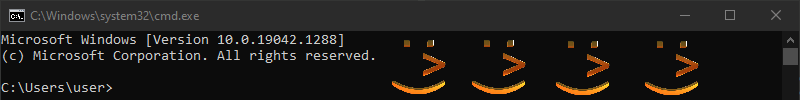September 13, 2023
Overview
Text rendering is a complex problem. Nearly all games require some level of text rendering, and most get by through the combination of good support libraries and limiting the scope of what kinds of text they need rendered. Often, this involves limiting their game to just 1 locale, and either severely limiting or entirely omitting text editing capabilities.
However, there are cases when one might want the ability to interactively edit text with the full capacity you would expect out of basic text editor programs, including support for whatever characters the user might throw at you. This is especially important for things like a chat box in a multiplayer game, or text boxes in an editor panel, both cases where arbitrary text from many locales could potentially be presented in your program.
This article covers my exploration into making text editor support for my game engine, and a detailed exploration into the details of what is commonly accepted as basic text editing controls in popular editors.
Design Goals
In my personal game engine project I want to be able to display and edit text in as many languages as possible, with full mouse, keyboard, IME, and clipboard support for selecting text. In addition, I want to support "rich text" features, such as being able to color, underline, strikeout, embolden, or italicize text, either via parsing in-text markup, or via other sources of highlighting rules like code syntax highlighting. All of this must operate on UTF-8 text, and function equivalently on amd64 Windows and Linux systems. It must also be fast and easy to integrate with my game engine's rendering pipeline.
Stretch Goal: I would like to supportMultichannel Signed Distance Fields (MSDF)and maintain crisp text when it is projected into a 3D world.
Prior Work
It's impossible to discuss text without mentioning the two seminal worksText Rendering Hates YouandText Editing Hates You Too. These articles do an amazing job at classifying most of the issues you would encounter when trying to deal with text rendering on your own, and have been pivotal for the design of my own tests. They describe many of the concepts I mention much better than I ever could, and are strongly recommended as prerequisites for this article.
UTF-8 Everywhere is a great manifesto on the benefits of UTF-8 encoding, and covers a lot of useful topics and definitions related to Unicode and its handling in code.
There are plenty of full-featured text rendering libraries out there, including open source libraries likePango orGraphite,which are the majority of my focus. Surprisingly, text editing support does not exist within these libraries, and so text editing support is much less available to "plug n' play" compared to text layout and rendering. My goal is not to implement a text editor completely from scratch, but simply to cover the gap where a ubiquitous open source solution just doesn't seem to exist.
Part 1 - Text Layout
Before starting this project, my initial text rendering implementation was built on top ofFreeType,which provided me with the ability to retrieve and rasterize glyphs from TrueType fonts, andHarfBuzz,a widely popular library used for text shaping, which is selecting glyphs and calculating their positions for displaying a given line of text. These libraries are very powerful, however the limitation of HarfBuzz is that it is only able to calculate the layout of a run of text for a single direction, script, and language. It also has no support for inserting line and paragraph breaks, and each block of text is shaped as a single line.
When working with full Unicode text, finding the proper position in a line to insert a soft break becomes complicated quickly. In order to help solve this, I began researching the capabilities ofInternational Components for Unicode (ICU),the official Unicode Organization support library, which I found implemented a WordBreakIterator and LineBreakIterator that I could potentially use to implement my own line breaking. Better still, ICU came with a library (LayoutEx) specifically designed for handling paragraph layout.
Overall, ICU and the utilities from LayoutEx turned out to be exactly what I was looking for, and allowed me to implement multi-script bidirectional font rendering fairly easily. However, there are plenty of quirks and limitations with implementing ICU, which I will document here:
- The layout library which LayoutEx depends on was deprecated and removed. You must replace it withicu-le-hb,which is an implementation of the ICU LayoutEngine built on top of HarfBuzz.
-
The user needs to provide an implementation of
icu::LEFontInstancein order to interface with the layout engine. Per ICU's example, it seems that best practice is to provide 2 different subclasses of LEFontInstance: a top level MultiScriptFont with an overridden getSubFont method in order to provide font fallbacks, and a second Font class which contains handles to your actual HarfBuzz/FreeType font data and requisite methods. - Despite the documentation,
LEFontInstance::getScaleFactorXandLEFontInstance::getScaleFactorYare both expected to always return 1. - The layout engine has no method to pass in shaper configuration, so it's not possible to disable optional ligatures
- Due to limitations with ICU's bidirectional run iterator, LayoutEx's ParagraphLayout cannot process text runs with hard line breaks (CR, LF, PSEP, LSEP), so the user (You) needs to split their own text into sub-paragraphs and manage hard line breaks themselves.
- ICU is primarily built around UTF-16 encoding. This is actually not an issue with most API interactions due to ICU's UText API, however LayoutEx requires a UTF-16 string, so all text run data for text markup must be split by UTF-16 code unit index. Internally, this limitation comes from the LayoutEngine, BiDi iterator, and UScript run iterator.
- Although there is nominally an option for vertical text layout, LayoutEx does not actually support vertical text.
-
In the ICU example, the height of a line in pixels was found as the the
max(ascender - descender)across all lines, however in most programs, line heights in rich text vary, and are calculated asmax(ascender - descender)for the visual runs of each line.
Part 2 - Font Fallback
No matter how much third party libraries handle glyph rasterization and layout, it seems that there's no standard way to deal with sourcing fonts and handling fallbacks. I haven't attempted to delve into Chromium's source code nor
into any Linux desktop environment's font handling, and there aren't many answers on the internet for how you should go about this. What follows is the result of inspecting Chromium and Roblox, and reading font family metadata from
HKEY_LOCAL_MACHINE\SOFTWARE\Microsoft\Windows NT\CurrentVersion\Fonts on Windows.
In my program, metadata regarding font files (TTF/OTF/etc.) must be explicitly defined for a font family using JSON files. A font family is defined a set of font faces of the same design, split by weight (Thin, Light, Bold, Regular, etc.) and style (normal or italic). Every font family has a name (e.g. "Noto Sans" or "Segoe UI"), and this is the name the user will use to refer to a collection of fonts, regardless of the actual files backing them. All JSON descriptor files are loaded when initializing the font cache, although font files themselves are lazily loaded. This global information of what fonts are available is used to stitch together lookup tables in such a way that every family has some valid font face available for every script, even if it may not actually contain any of the requested glyphs.
In order to select a font, ICU's layout engine repeatedly calls LEFontInstance::getSubFont with a substring of a single Unicode script type. Per ICU's example layout program, it's expected that this script code is the primary
value used to select a specific face to render glyphs, and in the example it's the only value used. In my JSON descriptors, all font files are explicitly associated with Unicode script IDs, with the exception of "main" font files that will
become the default choice for rendering a script if no explicitly defined value exists.
However, the script value alone is not sufficient for determining the optimal font to render glyphs with. There are many symbols such as emoji or mathematical symbols which exist as Zyyy (the Common script)
or Zinh (the Inherited script) and so count as part of whatever script run they are embedded within, but require reading a different font file from the main script. In order to deal with this, I have to iterate each codepoint manually
and query the charmaps of a general fallback font list associated with the family.
Color Glyph Selection
One issue I ran into was detecting whether a glyph was monochrome or full color, my initial idea was to use ICU to detect the Emoji Unicode property of each codepoint, however this would be insufficient, as I found that with Segoe UI
theMahjong Tile Unicode Blockhad full color glyphs for codepoints without the Emoji property.
Luckily, the solution to this issue was simple, when you call FT_Load_Glyph with FT_LOAD_RENDER | FT_LOAD_COLOR the bitmap's pixel mode is consistently FT_PIXEL_MODE_GRAY for monochrome glyphs, and
FT_PIXEL_MODE_BGRA for color glyphs, and FreeType is smart enough not to render monochrome glyphs with all color channels.
Part 3 - Text Navigation
Thanks to my stack of libraries, rendering text was a fairly straightforward task once I figured out ICU's API. This is where standardized library support ends and my personal research begins. For desktop programs, text can be navigated with either the mouse or the keyboard. Although touch screens are out of scope, much of the same logic applies to them as with navigating by mouse. To start, let's define some basic information that we know about the string thanks to ICU:
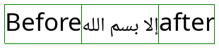For starters, every string is broken into lines, which are in turn broken into multiple Visual Runs. A visual run is a substring which is drawn in a single script, language, and direction with a single font. In this image the string is broken into 3 visual runs, two LTR with Latin script and one RTL with Arabic script. It's important to note that runs on the same line share edges, but in this case the right side of the Arabic run is actually the start, and is adjacent to the left run in memory.
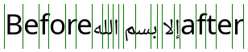Thanks to the layout engine, we also have the advance of each glyph, which will serve as the basis for calculating the visual cursor position. What's not pictured is that we also have the character index for each glyph, expressed as a code unit index in the original UTF-16 string.
Horizontal Character Navigation
Using the left and right arrow keys, the user can advance either towards the start of the string or towards the end. Simple enough, right? But immediately there are several problems to consider:
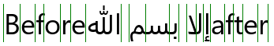 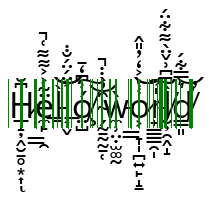A code unit is not a codepoint is not a glyph, so how do we know the next point to advance to? In these examples, the Arabic glyph represents 4 characters, and the Zalgo text has many glyphs per character. Let's do some simple experiments to figure out what everyone else does:
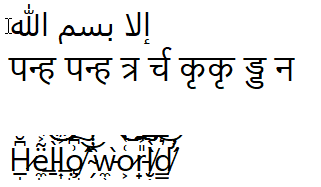Figure 1: Notepad
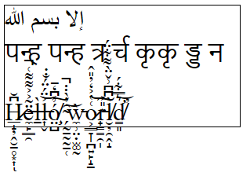Figure 2: Chromium <textarea>
Figure 3: Roblox
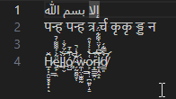Figure 4: VS Code
إلا بسم الله
पन्ह पन्ह त्र र्च कृकृ ड्ड न
H̷̲̝̦̭̮̱̥͙͎͆̆ͅë̶̼̙͇̯̃͐͐͌͌͑̚l̵̠̀l̶͎̬͐̈́̈́̐̇͝͝ó̸̧̤̺͗͆̒̄͠ ̴̗̰̠̰̰̠̜̑̓̀̇̇̚͝ẁ̵̼̹̤̣̫͚̰o̷͕͇̞̩̪͍̙̝̱͑̔͐̒̓̎̂͝͝r̵̟̳̳̯̩̎͐͠͠l̸̮̦̯̭̝̀͆͆͗̌̈̀͌͋̈́d̸̛̳͈͛̿͋́̕͝
Original Text
All tests were done with Microsoft's Segoe UI font, which renders Latin and Arabic, and falls back to Nirmala UI for the Devanagari script.
In all 4 tests, boundaries in the Arabic and Zalgo text behaved similarly: they followed the character breaks in the text, regardless of whether there was a 1:1, 1:many, or many:1 glyph to character ratio. With the Devanagari sample however, VS Code produced a minor deviation. It's pretty difficult to show it in the examples, but the cursor had multiple "stops" in the same position when adjacent to some of the compound glyphs. Let's examine this further:
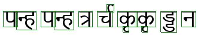 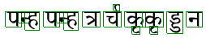Disclaimer: I don't know how to read the Devanagari script for any language it represents. My best understanding is that the Devanagari script has symbols that decorate some of the characters. Depending on what font you use, these decorators are either rendered as a combination glyph or as separate glyphs. VS Code seems to want to stop at each one of these symbols, while all other text editors seem to treat the full decorated symbol as a single character.
Using the ICU CharacterBreakIterator, it seems like ICU treats each decorated symbol as a single character as well as matching all other character breaks seen in the samples, so my conclusion is that VS Code is the odd one out. Therefore, it's generally safe to treat whatever ICU defines as a "character" as the level of granularity for placing the cursor.
That's a good start, but wait, how do we determine the cursor position when a glyph represents many characters?

Luckily, it doesn't appear to be that hard. By highlighting one character at a time in notepad and overlaying a screenshot, it becomes evident that all you need to do is uniformly subdivide the glyph by the number of characters, 4 in this case.
 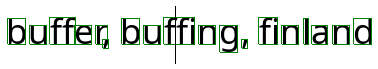
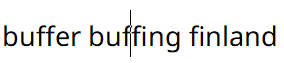
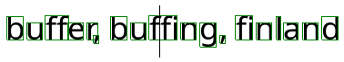
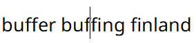
Implementing it in my own program matches these expectations, and switching to Noto Sans confirms that this works as expected for ligaturized Latin text as well. With this, I have achieved basic horizontal character navigation. Or have I? Before moving onto the next features, let's confirm one remaining annoying edge case: Soft breaks.
Recallinghow ICU breaks lines down into visual runs, there are cases at the edge of 2 runs when the same byte position in the string can represent 2 cursor locations. This can occur either at the boundary of a text direction change, or where a line has been broken by the layout engine and no "hard" linebreak character exists (hence: a soft break). I cover this topic in much more detail later in the article, but for the sake of completeness it is important to experiment and prove that the quirks of soft breaks do not apply to horizontal character navigation.
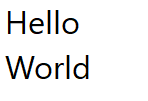Figure 1: Notepad
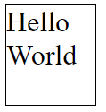Figure 2: Chromium
Figure 3: Roblox

Figure 4: VS Code
Here is the string "Hello World" broken across 2 lines in notepad. When navigating this string by keyboard, the cursor jumps from after the "d" directly to the start of the next line, skipping the end of the line. However, it's possible to place
my mouse cursor in this position due to concepts we will look at later. Chromium and VS Code share this property as well, with minor differences. Roblox behaves differently, however upon closer inspection of the CursorPosition property
on the Roblox TextBox, it becomes evident that Roblox actually injects a newline for softbreaks. This is an interesting finding, but unusual in the context of the other programs, and in my own program would cause complex interdependencies between
the layout system and the string data, especially once text modification comes into play.
With this, we can finally rest easy knowing that horizontal character navigation has been implemented with sufficient rigor, and with it we've built the foundation for implementing the rest of the navigation controls.
Horizontal Word Navigation
To start, it's important to define what a "word" is in the context of text navigation. The first thing I tried was ICU's WordBreakIterator which can iterate a string by language-aware boundaries, but this doesn't produce
the correct results for determining cursor jump destinations when navigating with Ctrl+Left and Ctrl+Right. The logic for word jumping is actually much simpler. In all programs that I experimented with, a word boundary
is simply where there is a change in the "whitespace-ness" between two adjacent characters, but how each program handles this information is slightly different:
Notepad is pretty straightforward. A word jump is a move to the next/previous word start which is the point at which the previous character is whitespace and the next character is not.
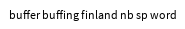Roblox behaves identically to notepad. Note that both respect the non-breaking space (NBSP) in the 4th word.
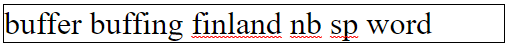Chromium textareas behave nearly identically to notepad and Roblox, however they don't seem to respect non-breaking spaces and treat them like any other whitespace.
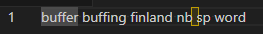VS Code, always being slightly different than the others, chooses to jump to the other side of a word before moving from end to end. Specifically, you will always move towards the end of the string along the ends of words, and move towards the beginning of the string along the beginnings of words. This is pretty nice behavior for a code editor and lets you get much more precision with highlighting just words while ignoring whitespace. And it also abides by non-breaking spaces.
From these samples, I conclude that notepad's simple pattern of jumping from word start to word start is what can be considered a "standard" practice for text editors, and respecting non-breaking whitespace is also preferred. However, VS Code's slightly more elaborate editing rules are definitely a desirable usability improvement that I will consider implementing in the future.
Implementing this on top of the character breaking logic is straightforward, but it is worth noting my choice of ICU whitespace function was u_isWhitespace (not to be confused with u_isspace, u_isUWhiteSpace,
and u_isJavaSpaceChar),
since it respects non-breaking spaces.
Affinity
Before moving onto the other navigation types it is important to go over affinity in further detail.
When you encounter a case where a byte position represents multiple cursor positions(covered here),the solution to disambiguating them is to store an extra bit of information generally referred to as the "affinity". Naturally each of the 2 possible values represent one of the possible positions of the cursor, but let's explore how affinity behaves in the reference editors to determine if there is a meaningful rule for what each value should represent.
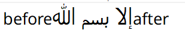Notepad
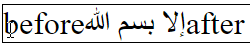Chromium
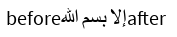Roblox

VS Code
Recalling the soft line breaks, with the exception of Roblox which injects a newline character, all other editors have a default assumption about what cursor position a certain character index represents when unaffected by affinity. Similarly, all editors including Roblox have an affinity bias for the boundaries of direction changes. Let's see if the biases show a pattern:
| Editor | Line End Default | LTR-RTL Default | RTL-LTR Default | LTR-RTL Mouse | RTL-LTR Mouse |
|---|---|---|---|---|---|
| Notepad | Next Run Start | Curr Run End | Curr Run End | Both | Curr Run Start/Prev Run End |
| Chromium | Next Run Start | Curr Run End | Next Run Start | Curr Run End | Next Run Start |
| Roblox | N/A | Curr Run End | Next Run Start | Both | Both |
| VS Code | Curr Run End | Curr Run End | Curr Run End | Curr Run End | Curr Run Start+1/Prev Run Start+1 |
From this study we can conclude that there is no standard pattern for default affinities across editors, and generally little consistency with behavior within an editor. For all editors with the exception of Chromium there was a consistent policy for handling directionality boundaries, but these did not necessarily correspond with the policy for handling a line break. The mouse results will be covered in more detail in the cursor navigation section, but they show little information for selecting a default policy for affinity.
Since there is no default behavior, for my implementation I will choose to consistently have my natural affinity be the same as Chromium's. Although it would be convenient to have consistency in default affinity behavior, I find that Chromium and Roblox's variation of the LTR-RTL and RTL-LTR boundary policy produces the most readable interaction, as notepad and VS Code create a situation where two natural cursor positions are located at the same visual position.
My affinity bit will encode 0 as meaning "use default affinity" and 1 to mean "use opposite affinity". This is a minor choice, as having an inconsistent affinity policy means I would need to query the visual context
of the cursor position in order to find its location, but it means that keyboard operations can reset the affinity to default easily, which is the behavior experienced in all tested editors.
Line Start/End Navigation
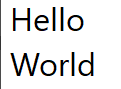
Using the Home and End keys, you can jump to the beginning or end of the current line. These operations have 2 major properties of note:
First, unlike character/word iteration, you do not progress towards the start or end of the string. Instead, you will always remain on the current line unless you navigate out by some other means.
Second, as shown in the above example on the "Hello World" string, line start/end jumps respect soft breaks, and unlike all of the operations mentioned so far, require interacting with the visual layout model of the text instead of the text data alone. This is the point at which the concept of "Affinity" must also be introduced.
Third, it's important to be clear that Home and End are specifically line start and end, not line left and right, so in a mixed-direction line, the start/end may end up in the middle of the string.
Text Start/End Navigation
This by far the simplest navigation control. "Start of Text" and "End of Text" are generally mapped to Ctrl+Home and Ctrl+End respectively. These must simply set the cursor position to 0 for the
former, and string.length() for the latter.
Line Navigation
In most implementations, vertical line navigation is an operation based on the visual cursor location, as opposed to its location in the string.
Mouse Navigation
Mouse navigation, like line navigation, is a query against the layout information of the text, with the goal being to find the closest cursor position to the mouse. This is done pretty much exactly like the line navigation query, except that initially the line to test is not known, and must be found first. The entire height of the line (ascender - descender) encompasses the vertical bounding axis of the line, and individual bounding boxes of glyphs do not matter. The main thing to keep in mind with mouse positioning is its relationship to affinity, the cursor should be set so that its index and affinity bring it as close as possible to the mouse position, otherwise you get weird artifacts like this:
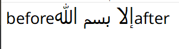Part 4 - Text Selection
Text selection, for the most part, is an extension of cursor selection mechanics. However, instead of storing the cursor position alone, we now store a second cursor position and affinity for the selection start. Unlike the cursor position, which is assumed to always be valid as long as the text box is focused, text boxes are not always in selection mode, so an additional piece of information must be stored with the selection start to signify whether it's valid.
The main complication with text selection is determining what interval the cursor position and selection start represent. This is particularly relevant with bidirectional text, where the visual interval between SelectionStart and
CursorPosition does not equal the memory interval. Let's take a look at how our sample programs handle this scenario:
Part 5 - Text Modification
Deletion
Even the most basic text editors support the removal of substrings from within the text, both of single characters and of longer substrings. For keyboard-based deletion operations such as character and word deletion, there are generally
two directions of deletion: backwards (before the cursor, towards the start of the string) via the Backspace key, and forwards (after the cursor, towards the end of the string) via the Delete key.
Character Deletion
On the surface, it would seem that the implementation of character deletion would simply be to delete the preceding/following characters at the cursor position, depending on the key pressed. However, the sampled text editors show quite a variation in deletion rules:
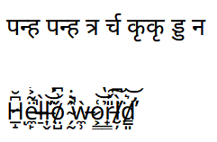Notepad
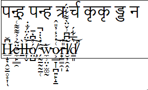Chromium
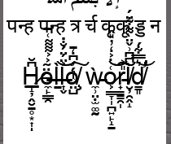Roblox
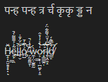VS Code
There are 2 striking on display here: Firstly, deletion operations may be more granular than per-character, the previous minimum granularity assumed for text operations, and for multi-codepoint characters seemingly operate on codepoints.
Second, the rules are often different depending on the direction of approach. When performing a backwards deletion (Backspace) editors sometimes delete per-codepoint, and when performing a forward deletion editors
sometimes delete per-character.
As shown with the difference between the Zalgo and Devanagari texts, some editors handle deletion on multi-codepoint characters contextually based on the kind of codepoints encountered. Based on these tests and additional (not pictured) tests with Emoji containing skin color modifiers, I have concluded the following about what an editor may do:
-
The deletion operation is based entirely around the codepoint adjacent to the cursor in the direction of deletion. A backwards deletion will choose what to delete based on the previous codepoint to
CursorPositionand a forward deletion will make its decision based on the value atCursorPosition - If the codepoint is a Combining Character or Emoji (found by querying the codepoint's properties in ICU), the entire character must be deleted, otherwise only this codepoint may be deleted.
This behavior will likely result in functionality akin to most regular text editors, however it's important to consider the additional complexity of manually classifying deletable sequences of codepoints and the ramifications of failure. Looking at the officialUnicode Property Indexit's pretty clear that there are a lot of character classes, and classifying what is a deletable unit is not an easy task. It's also important to remember that the best tool we have for this, the ICU CharacterBreakIterator, classifies all of the tested sequences (Deva clusters, Emoji with modifiers, and Latin text with combining characters) as single characters.
While it's not quite as jarring as a poorly placed cursor, attempting to hand-roll the rules for deletion may end with worse overall correctness than just performing deletions using the CharacterBreakIterator, whose main fault in these examples is being a bit more overzealous on deleting compound characters in the backwards deletion case. Therefore, although testing shows that many editors feature sub-character deletion, it is probably safest to stay with deleting characters as defined by ICU's CharacterBreakIterator.
Word Deletion
Word Deletion is a direct extension of the word iteration logic defined for Horizontal Word Navigation. For backwards/forwards word deletion, invoked by pressing Ctrl+Backspace and Ctrl+Delete, the text interval that
should be deleted is the interval from the current cursor position to the previous/next word boundary respectively.
Line Deletion
When pressing either Ctrl+Shift+Backspace or Ctrl+Shift+Delete, the user can execute a line deletion, which will delete the text interval from the current cursor position to either the beginning or end of the line.
This behavior is soft-break aware, and derives from the logic used to implement Line Start/End Navigation.
Selection Deletion
When either Backspace or Delete is pressed while the text area is in selection mode, the currently selected text will be deleted. The main thing to be aware of with this operation is that it causes the text
area to exit selection mode, and the cursor position must be moved to min(SelectionStart, CursorPosition) in order to remain visually in the spot where the deleted text interval used to be.
Addition
The addition of substrings is much simpler than deletion. In all cases, the target characters must simply be inserted at the cursor position in the string. When the editor is in selection mode, a Selection Deletion operation must be performed and the characters will be inserted afterwards at the resulting cursor position.
There are 2 main sources of input: the character input event and the clipboard. The character input event is provided by the OS and allows you to receive a typed codepoint as the user expects it, which both allows you to cover modifiers such as
Shift+Letter and things like Alt codes and IME inputs. My implementation usesGLFWas a windowing solution, and I listen to the character input event via its key callback. Text is inserted
from the clipboard when the user presses Ctrl+V. In this case, the contents of the clipboard are simply inserted as a character would be.